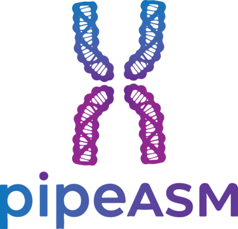

Generate a config.yaml file for the Pipeasm pipeline (v1.2.0)
Sample identifier and input read files
Unique sample identifier, used to name all output files. Letters, numbers and underscores only (e.g. a DToL/VGP ID).
Absolute path to the PacBio HiFi reads, merged into a single .fastq.gz
file.
Set both Hi-C files or leave both empty. Without Hi-C, no phasing or scaffolding is done.
Absolute path to Hi-C forward reads (.fastq.gz).
Absolute path to Hi-C reverse reads (.fastq.gz).
Absolute path to Oxford Nanopore reads (.fastq.gz). They are trimmed
with Dorado and added to Hifiasm as ultra-long reads (--ul).
Genome size and assembly mode
Estimated haploid genome size. Selects the memory requested per rule in SLURM mode
(config/resources/{genome_size}.yaml). Required in local mode too.
Yes to also run a Hifiasm solo (primary/alternate) assembly;
No for the Hi-C phased assembly only. With HiFi reads only (no Hi-C), set
Yes, otherwise no assembly is produced.
Yes if the Hi-C reads come from a different species than the HiFi
reads. Hifiasm then runs in solo primary mode (--primary) and YaHS scaffolds the primary
and alternate assemblies. Hi-C contact maps are still generated before and after scaffolding.
Requires Hi-C reads.
BUSCO lineage, taxonomy and contamination screening
Lineage used by Compleasm, from the closest taxonomic group. Do not add the
_odb10/_odb12 suffix. See the
available
lineages.
Used by FCS-GX to tell contaminants from the target organism. Use a closely related species if unavailable. Search the NCBI Taxonomy.
Absolute path to the FCS-GX database directory. Leave empty to skip decontamination. The database takes ~470 GB of disk and FCS-GX needs ~512 GB of RAM.
MitoHiFi settings for mitochondrial genome assembly
Assemble the mitochondrial genome with MitoHiFi.
Where the Singularity images are stored
Absolute path to the directory for the .sif images. They are
downloaded on the first run as <name>_<tag>.sif and reused afterwards, so the
directory can be shared between runs. When upgrading from Pipeasm 1.1.x, all images are pulled again
and the old unversioned .sif files can be deleted.
The defaults follow the VGP/DToL assembly pipelines and work for most genomes. Each value is passed as-is to the tool's command line.
Hi-C read trimming and HiFi adapter removal
--cut_tail: trim low-quality 3′ bases (sliding window, see quality
threshold); --detect_adapter_for_pe: detect adapters by read overlap;
--trim_poly_g: trim poly-G tails (NovaSeq/NextSeq); --dont_eval_duplication:
skip the duplication analysis.
Discard shorter reads after trimming, e.g. --length_required 35.
Mean quality of the --cut_tail sliding window, e.g.
--cut_mean_quality 24.
Trim bases from the start of read 1 only, e.g. --trim_front1 5. Add
--trim_front2 for read 2.
PacBio SMRTbell adapter sequences; -b searches for them anywhere in
the read.
Discard the whole read when an adapter is found, with a minimum overlap, e.g.
--discard -O 35.
Also search the reverse complement, with an error rate, e.g.
--rc -e 0.1.
HiFi and ONT read length and quality plots
Write statistics as TSV and plots as SVG, e.g. --tsv_stats --format svg.
Plot types for the length vs. quality plots, e.g. --plots kde hex dot.
K-mer counting, genome profiling and ploidy estimation
-v: verbose; -M32: up to 32 GB of memory for sorting;
-t1: keep k-mers seen at least once.
K-mer size, e.g. -k31. Must match GeneScopeFK.
Must match FastK, e.g. -k 31.
Expected ploidy, e.g. -p 2 for diploids.
K-mers with a count below this value are treated as sequencing errors. Set it just
above the error peak of the GeneScopeFK k-mer spectrum, e.g. -L 12.
Hifiasm, gfastats, and Bellerophon parameters
-l: haplotig purge level (0 = none, 1 = light, 2/3 = aggressive; use
-l 0 for inbred or highly homozygous genomes). -O: minimum overlapping
reads to remove a duplicated contig.
Similarity threshold to call two contigs duplicated haplotigs, e.g.
-s 0.75 (Hifiasm default: 0.75 for -l 1/2, 0.55 for -l 3).
Write FASTA, building the sequences from the paths in the Hifiasm GFA, e.g.
-o fa --discover-paths.
Keeps only the 5′ side of Hi-C reads that span a ligation junction and merges
R1/R2. Minimum mapping quality (MAPQ) to keep a read, e.g. --quality 10.
Hi-C scaffolding and contact map generation
Sets the resolution argument in PretextMap flags. For Ultra and High, requires Pipeasm v1.2.0.
Minimum mapping quality and resolution. Open --ultraRes maps in a
recent PretextView.
Image of the full map (all sequences), "Mellow Rainbow" colour map, black grid, 4000 px resolution.
Sets the -e restriction enzyme motifs in YaHS flags.
-e: enzyme motifs; --no-mem-check: skip the memory
check; -v 1: verbosity level.